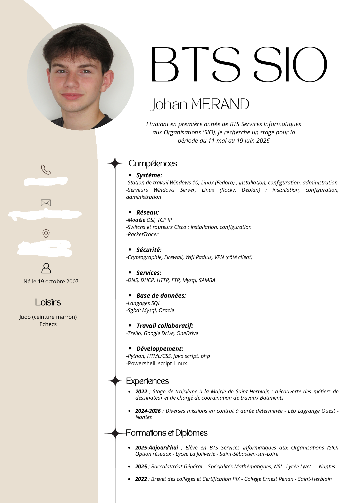

Étudiant en BTS Services Informatiques aux Organisations. Spécialisé en réseaux (SISR). Passionné par l'administration système, le déploiement informatique et les infrastructures réseau.
La Joliverie, Nantes
HTML, CSS, JavaScript, PHP
Conception et administration de bases de données relationnelles.
Administration système et réseau, configuration d'équipements.
Gestion de parc informatique et déploiement de postes en entreprise.
Utilisation et administration des principaux OS du marché.
Organisation des tâches, gestion des tickets et suivi des interventions.
Script d'automatisation pour gérer des utilisateurs via un fichier CSV. Création, suppression et modification de comptes en masse.
Mise en place d'une infrastructure réseau complète pour la société fictive Galaxy Swiss Bourdin : serveurs, VLAN, services DNS/DHCP.
Déploiement d'applications conteneurisées avec Docker Compose. Mise en place de services web et bases de données isolés.
Ateliers Chantiers de Bretagne — 27 rue du Ranzay, Nantes (44)
Tuteur : Yves LARROUMET
~30 postes Lenovo configurés et déployés via SCCM pour les salariés d'ACB.
Gestion des tickets GLPI, dépannage à distance via TeamViewer et interventions physiques.
Inventaire, préparation de PC stagiaires, effacement sécurisé avec Blancco.
Téléchargez le rapport complet de mon stage chez ACB (BTS SIO 1ère année — 2025/2026).
📥 Télécharger le rapport de stageVers un débit de 1 Tbit/s et une convergence IA d'ici 2030.

Email : j.merand@email.com
LinkedIn : Profil LinkedIn